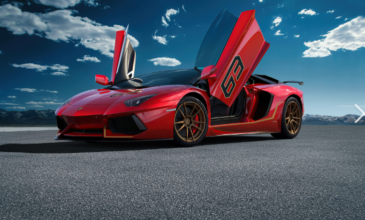
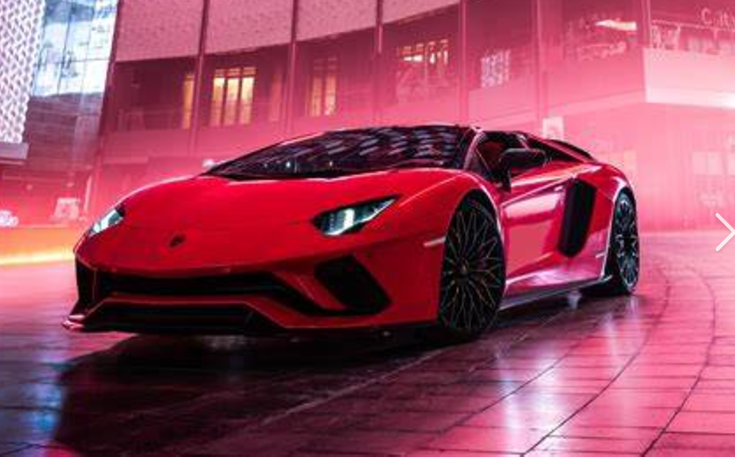

Born into a family of grape farmers, Ferruccio Lamborghini was far more interested in mechanics than cultivating cro
ps. After a stint in the Italian Air Force during World War II, he melded his passion with that of his family’s business
when he started building tractors for working the fields. Lamborghini’s innovations were a smashing success and he was soon
wealthy enough to afford the pinnacle of automotive engineering: a Ferrari. But he quickly found issues with the vehicle that he
wanted to address with il Commendatore himself, Enzo Ferrari.
In 1962, Lamborghini drove to the factory in Maranello and told Ferrari that his clutch wasn’t quite right. Ferrari’s rumored
rebuke? Somewhere along the lines of: “The car is fine. You just don’t know how to drive it.” Incensed, Lamborghini vowed to make
a perfect car, far better than anything from Ferrari. A year later, Automobili Lamborghini was founded in Sant’Agata Bolognese. What
emerged from that assembly line would forever better the automotive world.
Unveiled under the banner Automobili Ferruccio Lamborghini, the 3.5-liter V-12-powered coupe had a power train designed by the famed
Giotto Bizzarrini. The “350” represented the engine displacement, while the “GT” signified it was a grand tourer. The V? That stood for
“Veloce,” the Italian word for “fast.” Alas, it was never completed as a drivable car because the body panels wouldn’t fit around the engine.
Lamborghini did go on to create his first mass-market vehicle, the 350 GT, in 1964. A total of 120 examples were made.
Why is Lamborghini the best?
Lamborghini is a well-known Italian luxury brand offering prestigious vehicles known for their sporty and sexy design. While there
is no definitive "best" Lamborghini, models like the Countach, Diablo, and
Miura are considered impressive both technologically and aesthetically3. The Aventador is also a highly desired Lamborghini model5. lamborghini

